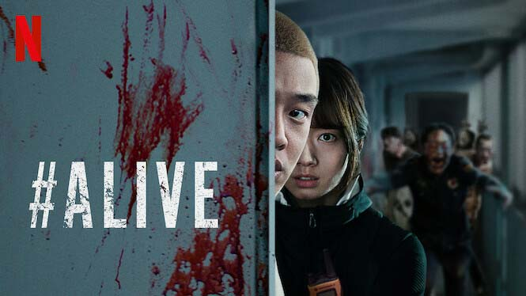

Store no. L56
Pine City Mall
Cape Town
Showing Times.
11:00 - 12:30 (Monday - Friday)
12:00 - 13:30 (Saturday)
09:30 - 11:00 (Sunday)
#ALIVE
#Alive (Korean: #살아있다; RR: #Saraitda) is a 2020 South Korean zombie film directed by Cho Il-hyung.[2] Starring Yoo Ah-in and Park Shin-hye, it is based on the 2019 script Alone by Matt Naylor, who co-adapted his script with Cho. The film revolves around a video game live streamer's struggle for survival as he is forced to stay alone at his apartment in Seoul during a zombie apocalypse. It was released in South Korea on June 24, 2020,[3][4][5][6][7] and globally via Netflix on September 8, 2020
Leading Characters: Yoo Ah-in as Oh Joon-woo , Park Shin-hye as Kim Yoo-bin, Lee Hyun-wook as Lee Sang-chul, Oh Hye-won as the policewoman , Jeon Bae-soo as a masked man & Lee Chae-kyung as the zombified wife
Age Rating: 15 NVL
WHERE WILL YOU FIND US?
Visit us at:Store no. L56
Pine City Mall
Cape Town
Showing Times.
11:00 - 12:30 (Monday - Friday)
12:00 - 13:30 (Saturday)
09:30 - 11:00 (Sunday)